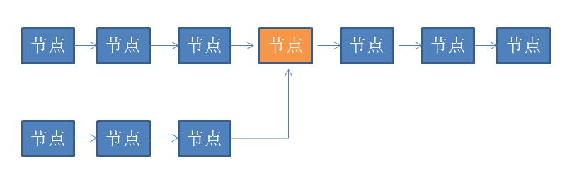

HashSet法
迭代链表，每迭代一个元素，判断HashSet中是否存在，存在这说明有环，不存在则将id放入HashSet中，继续迭代，知道结束。
双重引用法
用两个变量引用表头，每次循环体内一个变量指向下一节点，一个变量指向下两个节点，然后判断这两个变量的引用对象是否相同。存在相同则有环，不存在相同则一定会在有限时间内结束程序。
原理就是在一个环形跑道上，其中一个运动员的速度大于另外一个运动员的速度时，就一定会相遇。
衍生问题
问题一：判断两个单向链表是否相交，如果相交，求出交点。

把一个链表的尾节点与另外一个链表的头节点相连，然后用双重引用法求。
如无特殊说明皆为原创，版权所有，转载时请注明出处.